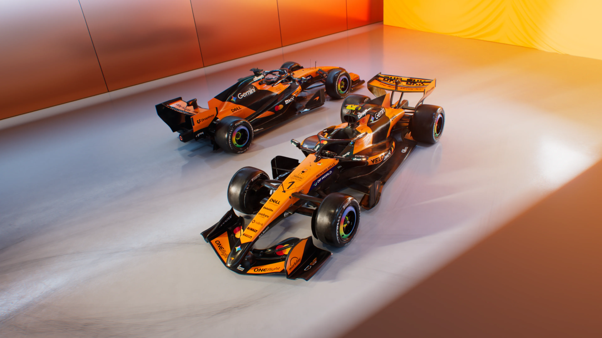
McLaren Mastercard F1 Team
Bază: Woking, Marea Britanie | Motor: Mercedes
Piloți: Lando Norris (#1) & Oscar Piastri (#81)
Urmărește grila extinsă a sezonului 2026, noile reglementări tehnice, clasamentele complete la zi și calendarul integral al Marilor Premii.
Vezi Clasamentul Complet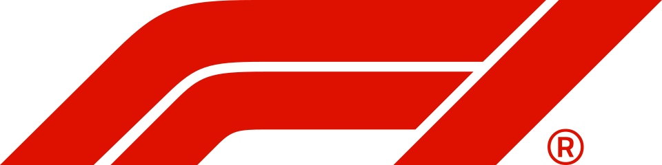
Formula 1 reprezintă vârful ingineriei aerodinamice și al motorsportului mondial. Sezonul 2026 marchează o schimbare istorică de regulament: monoposturi mai agile cu aerodinamică activă, unități de putere cu împărțire 50/50 între motorul termic și energia electrică, plus combustibili 100% sustenabili.
Grila de start s-a extins la 11 echipe și 22 de piloți odată cu intrarea oficială a constructorilor Audi și Cadillac, oferind dueluri spectaculoase de-a lungul celor 24 de etape mondiale.

Bază: Woking, Marea Britanie | Motor: Mercedes
Piloți: Lando Norris (#1) & Oscar Piastri (#81)
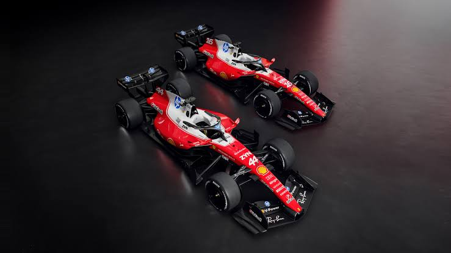
Bază: Maranello, Italia | Motor: Ferrari
Piloți: Charles Leclerc (#16) & Lewis Hamilton (#44)

Bază: Milton Keynes, UK | Motor: Red Bull Ford
Piloți: Max Verstappen (#3) & Liam Lawson (#30)

Bază: Brackley, Marea Britanie | Motor: Mercedes
Piloți: George Russell (#63) & Kimi Antonelli (#12)
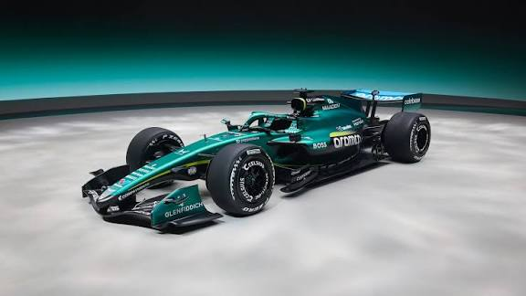
Bază: Silverstone, UK | Motor: Honda
Piloți: Fernando Alonso (#14) & Lance Stroll (#18)

Bază: Grove, Marea Britanie | Motor: Mercedes
Piloți: Carlos Sainz (#55) & Alexander Albon (#23)
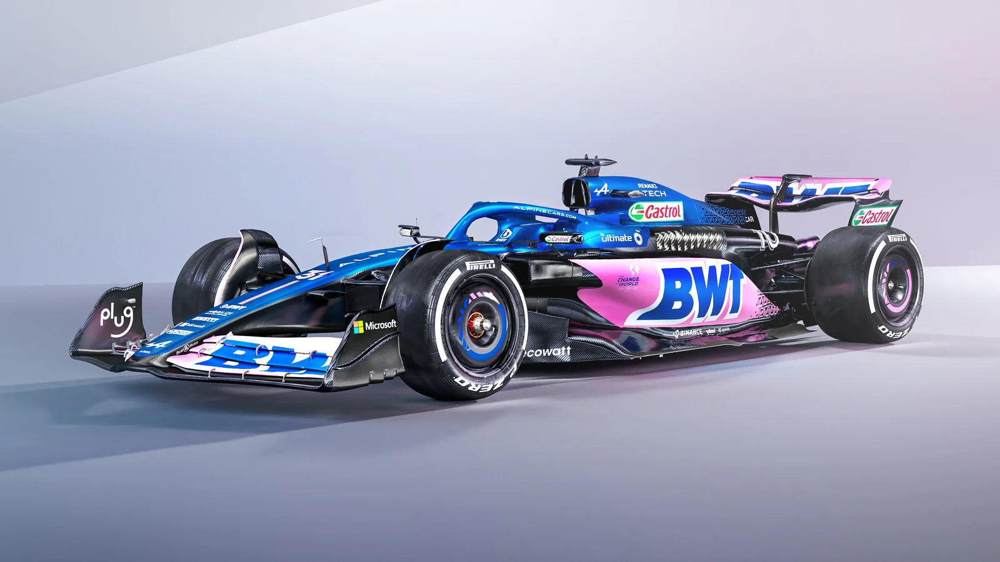
Bază: Enstone, Marea Britanie | Motor: Mercedes
Piloți: Pierre Gasly (#10) & Franco Colapinto (#43)
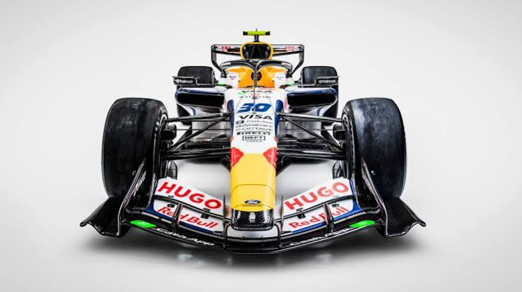
Bază: Faenza, Italia | Motor: Red Bull Ford
Piloți: Arvid Lindblad (#41) & Isack Hadjar (#6)
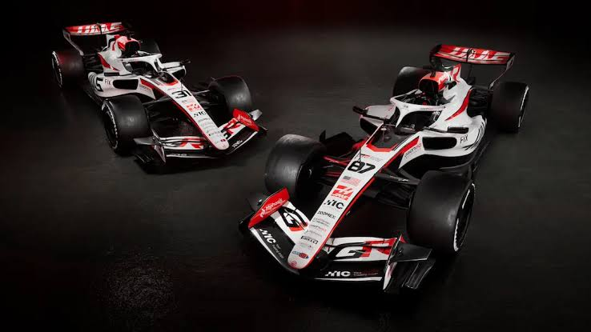
Bază: Kannapolis, SUA | Motor: Ferrari
Piloți: Esteban Ocon (#31) & Oliver Bearman (#87)

Bază: Hinwil, Elveția / Neuburg | Motor: Audi
Piloți: Nico Hülkenberg (#27) & Gabriel Bortoleto (#5)

Bază: Fishers, SUA / Silverstone | Motor: Ferrari
Piloți: Valtteri Bottas (#77) & Sergio Pérez (#11)

McLaren Mastercard F1 Team
Marea Britanie

McLaren Mastercard F1 Team
Australia
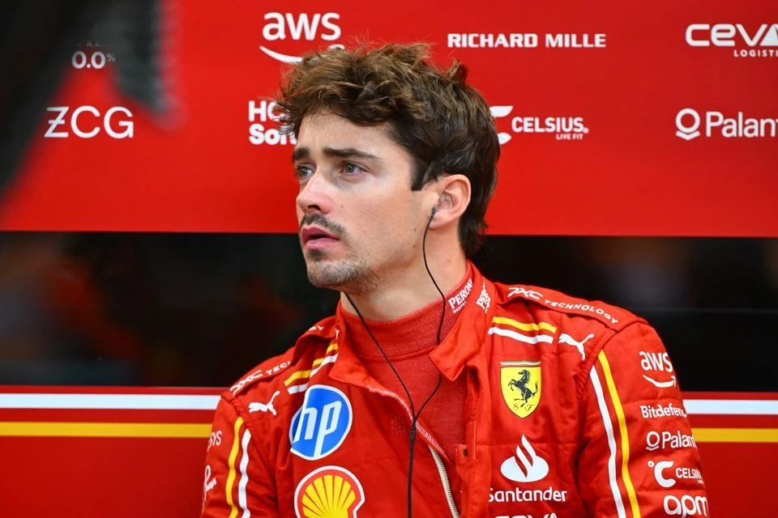
Scuderia Ferrari
Monaco
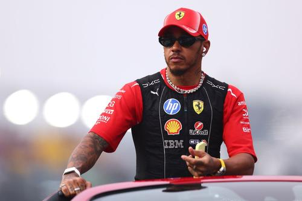
Scuderia Ferrari
Marea Britanie
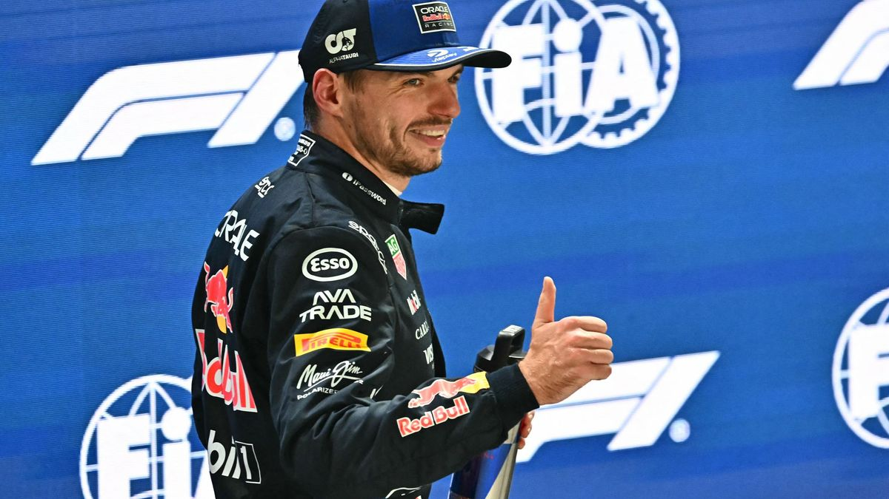
Oracle Red Bull Racing
Țările de Jos
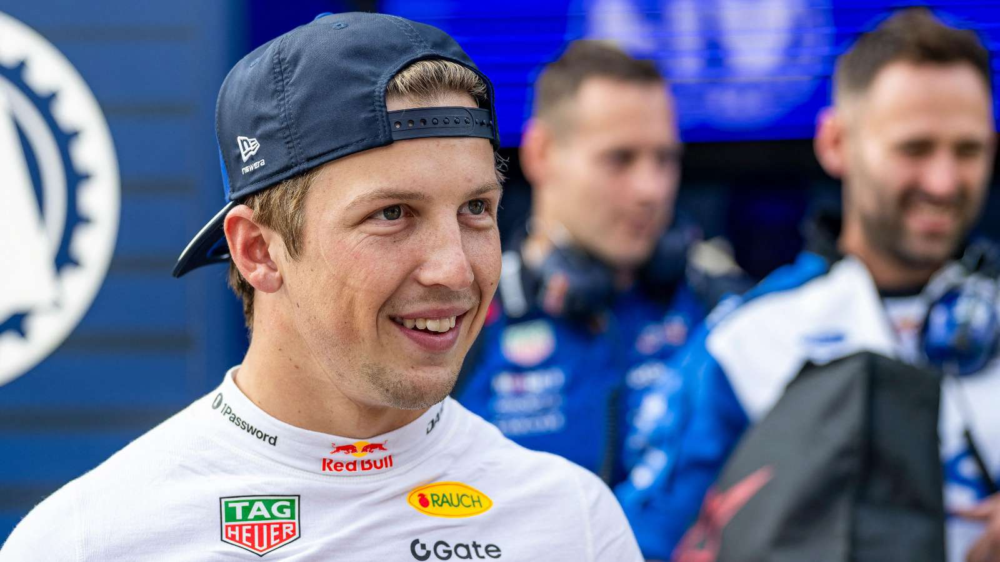
Oracle Red Bull Racing
Noua Zeelandă

Mercedes-AMG PETRONAS
Marea Britanie
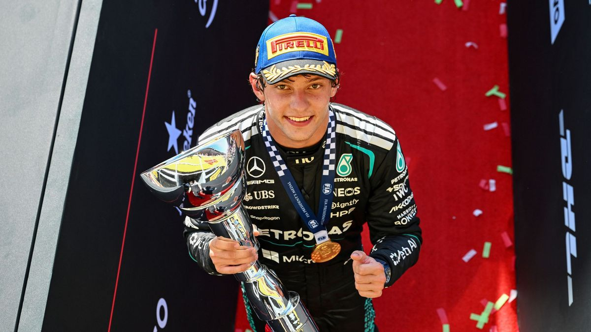
Mercedes-AMG PETRONAS
Italia
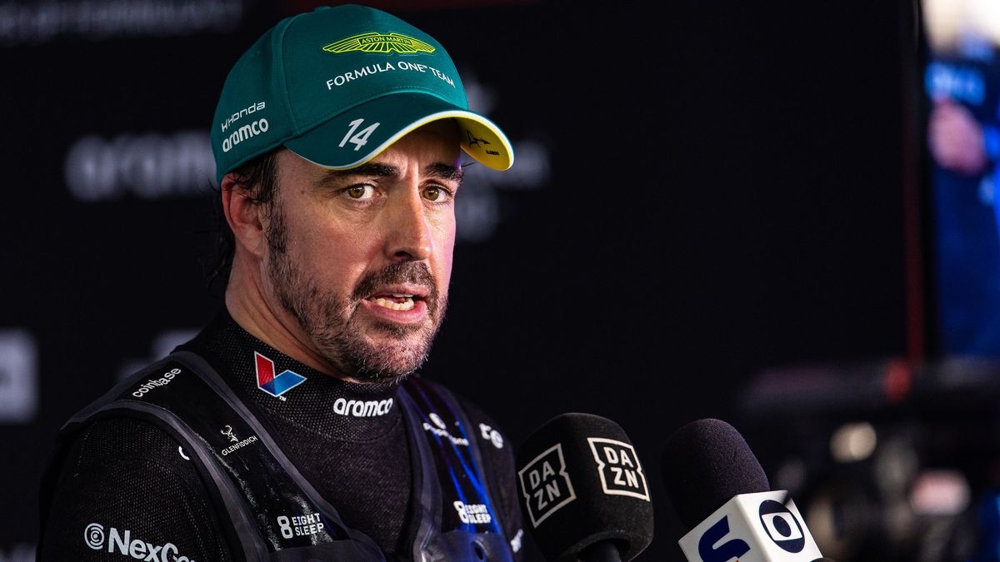
Aston Martin Aramco
Spania
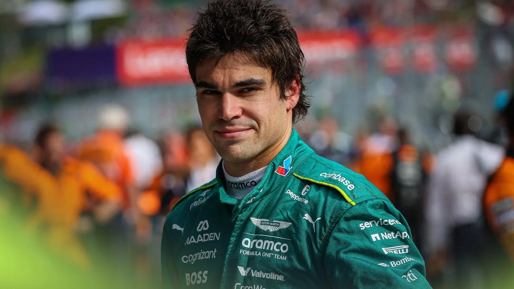
Aston Martin Aramco
Canada
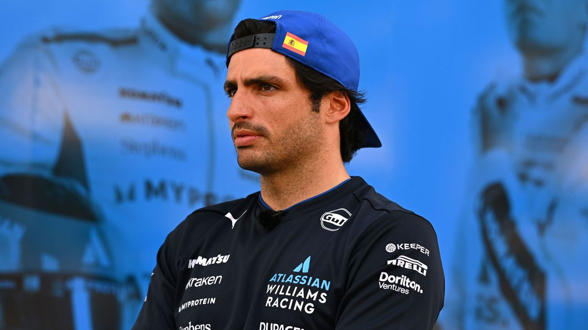
Atlassian Williams Racing
Spania
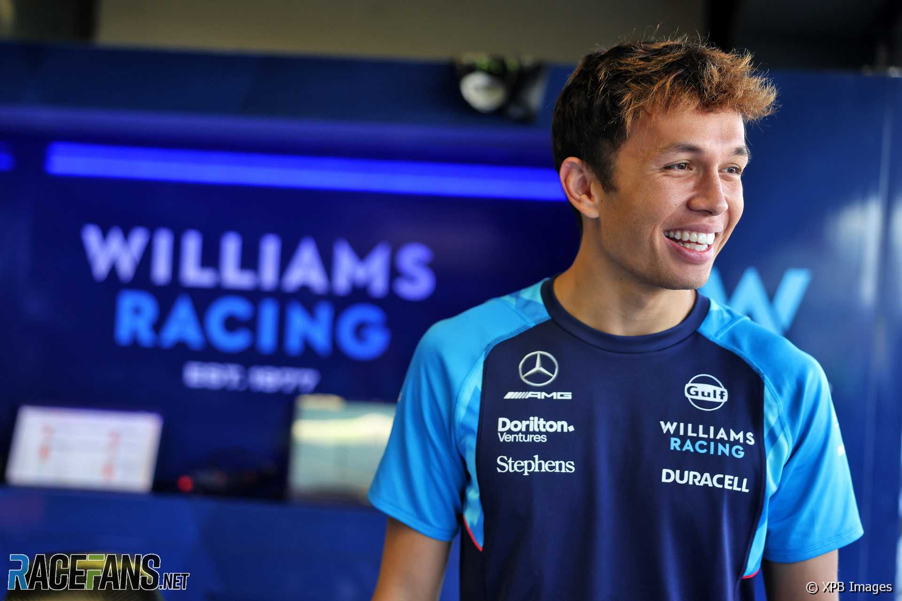
Atlassian Williams Racing
Thailanda
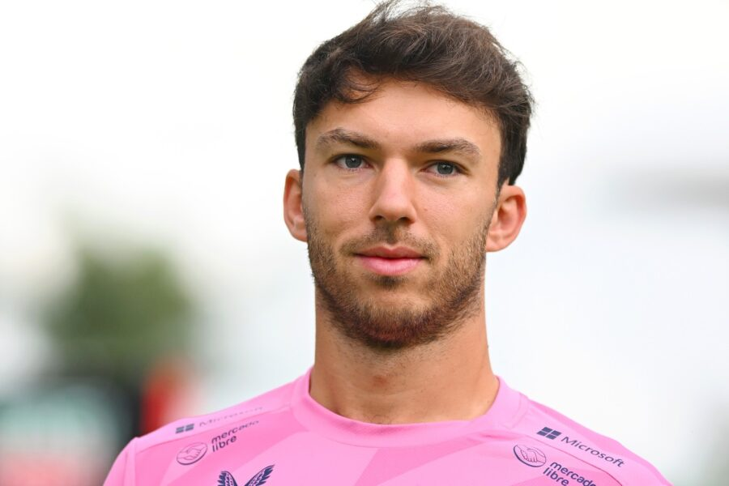
BWT Alpine F1 Team
Franța
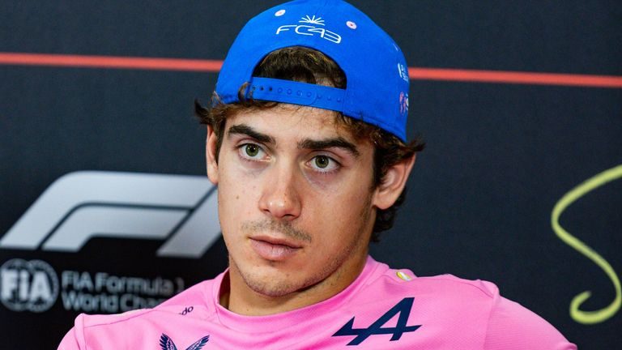
BWT Alpine F1 Team
Argentina
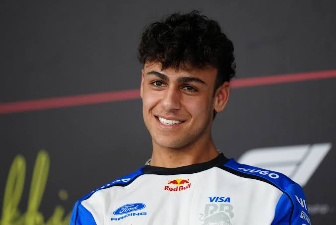
Visa Cash App Racing Bulls
Marea Britanie

Visa Cash App Racing Bulls
Franța
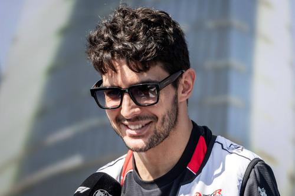
MoneyGram Haas F1 Team
Franța

MoneyGram Haas F1 Team
Marea Britanie
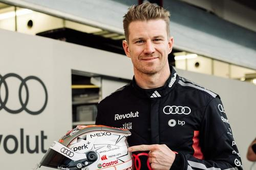
Audi F1 Team
Germania
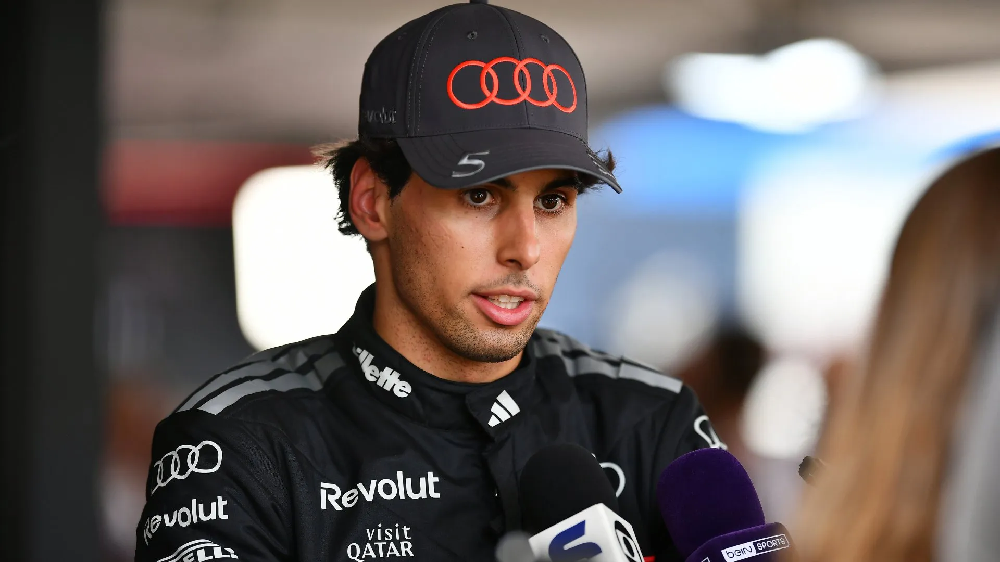
Audi F1 Team
Brazilia

Cadillac Formula 1 Team
Finlanda

Cadillac Formula 1 Team
Mexic

Locație: Melbourne, Australia
Lungime: 5.278 km | Tururi: 58

Locație: Shanghai, China
Lungime: 5.451 km | Tururi: 56

Locație: Suzuka, Japonia
Lungime: 5.807 km | Tururi: 53
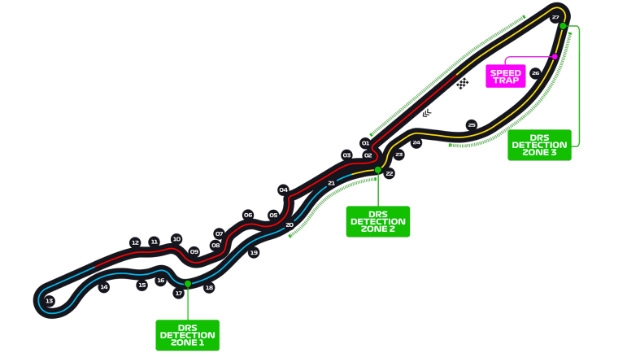
Locație: Jeddah, Arabia Saudită
Lungime: 6.174 km | Tururi: 50

Locație: Miami, SUA
Lungime: 5.412 km | Tururi: 57

Locație: Montreal, Canada
Lungime: 4.361 km | Tururi: 70

Locație: Monte Carlo, Monaco
Lungime: 3.337 km | Tururi: 78

Locație: Barcelona, Spania
Lungime: 4.657 km | Tururi: 66

Locație: Spielberg, Austria
Lungime: 4.318 km | Tururi: 71

Locație: Silverstone, Marea Britanie
Lungime: 5.891 km | Tururi: 52

Locație: Stavelot, Belgia
Lungime: 7.004 km | Tururi: 44

Locație: Budapesta, Ungaria
Lungime: 4.381 km | Tururi: 70

Locație: Zandvoort, Țările de Jos
Lungime: 4.259 km | Tururi: 72

Locație: Monza, Italia
Lungime: 5.793 km | Tururi: 53

Locație: Madrid, Spania
Lungime: 5.474 km | Tururi: 55

Locație: Baku, Azerbaidjan
Lungime: 6.003 km | Tururi: 51

Locație: Sepang, Malaezia
Lungime: 5.543 km | Tururi: 56

Locație: Marina Bay, Singapore
Lungime: 4.940 km | Tururi: 62

Locație: Austin, Texas, SUA
Lungime: 5.513 km | Tururi: 56

Locație: Ciudad de Mexico, Mexic
Lungime: 4.304 km | Tururi: 71

Locație: São Paulo, Brazilia
Lungime: 4.309 km | Tururi: 71

Locație: Las Vegas, Nevada, SUA
Lungime: 6.201 km | Tururi: 50

Locație: Lusail, Qatar
Lungime: 5.419 km | Tururi: 57

Locație: Insula Yas, Abu Dhabi, EAU
Lungime: 5.281 km | Tururi: 58
Circuit: Circuit of the Americas
Status: Urmează în acest weekend (56 tururi)
Circuit: Autodromo Hermanos Rodriguez
Status: Cursă programată (71 tururi)
Circuit: Autódromo José Carlos Pace (Interlagos)
Status: Cursă + Sprint programate (71 tururi)
Circuit: Las Vegas Strip Circuit
Status: Cursă nocturnă programată (50 tururi)
Circuit: Lusail International Circuit
Status: Cursă + Sprint programate (57 tururi)
Circuit: Yas Marina Circuit
Status: Marea Finală a Sezonului (58 tururi)